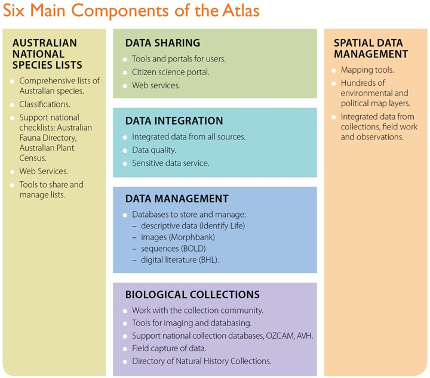

Atlas Projects
Program of Projects
The Atlas of Living Australia is developing core systems, tools and services needed for supporting and managing biodiversity information. This diagram provides an overview of the key components to be delivered by the Atlas project.

Atlas Components © Atlas of Living Australia
Australian National Species Lists
- Tools to manage and share names and classification of all Australian organisms
- Support development of comprehensive lists of species found in Australia.
Biological Collections
- Work with whole collection community to enhance capacity for accession and curation of specimens
- Enhance tools and software for imaging and databasing specimens
- Support and enhance Australia’s Virtual Herbarium (AVH), Online Zoological Collections of Australian Museums (OZCAM) and other national collection databasing initiatives.
In consultation with the councils of collections we have identified priority areas for investment to support natural history collections. Two workshops have helped develop strategies for 1) supporting collections using Biolink software and 2) for future use of ALA tools to provide the functions of Australia’s Virtual Herbarium (AVH) and the Online Zoological Collections of Australian Museums (OZCAM).
top of page
Spatial Data Management
- Interoperable tools: data caches, environmental layers, mapping tools, analysis frameworks
- Integrated data from natural history collections, ecological field work and amateur observations.
We have implemented a Spatial Portal within the Atlas based on the software developed by the NCRIS Integrated Marine Observing System (IMOS) against critical needs and priority use cases for geospatial analysis and modelling developed with the target user community.
top of page
Data Management
- Provide repositories to help with management of images, sequences, identification keys, species interactions, literature.
Ely Wallis (Museum Victoria) has been appointed project lead for the ALA mirror of the Biodiversity Heritage Library and the project plan is almost complete. Gerry Cassis (University of NSW) has been appointed project lead for the ALA species interactions component and a project plan is being developed. Kevin Thiele (WA DEC) has been appointed project lead for the ALA descriptive data component, and is expected to start work early in 2010. The IdentifyLife project has developed the storage engine which the ALA will use for descriptive data.
We are also having discussions with the Barcode of Life Database and MorphBank on projects to deploy mirrors in Australia.
Online Identification Services - tools to assist with identification of Australian organisms
top of page
Data Integration
- Integrate data and information from all sources
- Address data quality issues and sensitivity of data for some species.
There has been progress on several fronts. The ALA has engaged a business analyst to develop data use agreements and to liaise with data providers. Discussions are under way with the ERIN team from DSEWPaC over the future use of ALA services within the department. Wrappers have been written in readiness to bring a wide range of exemplar data sets into the ALA Metadata Repository
Data Annotation Services - tools to handle comments and corrections to data
top of page
Data Sharing
- Develop tools and portals to deliver biodiversity information to end users
- Biodiversity Information Explorer - overview of all information, species pages
- Citizen Science Portal - data management for amateur naturalists.
We have prepared a report on the requirements and opportunities for collaboration around citizen science activities. A basic user interface has been developed for the ALA Biodiversity Information Explorer component. The ALA has engaged a usability expert to review user requirements in greater detail and to provide recommendations on user interface design.
The ALA has undertaken a User Needs Analysis to gain a better understanding of the full range of user applications which should be supported and to prioritise their development.
top of page